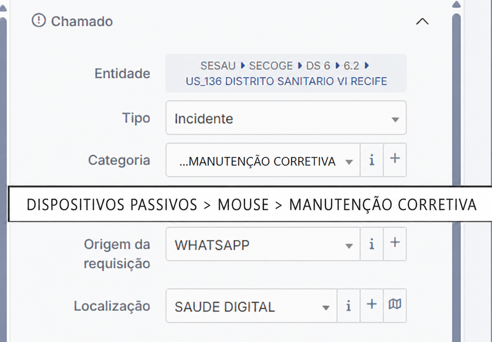
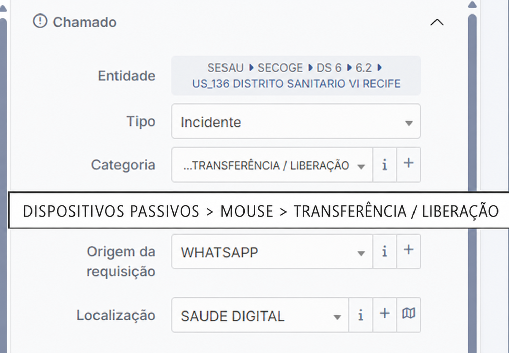
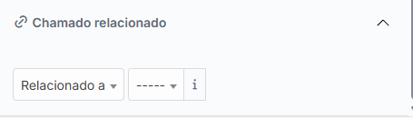
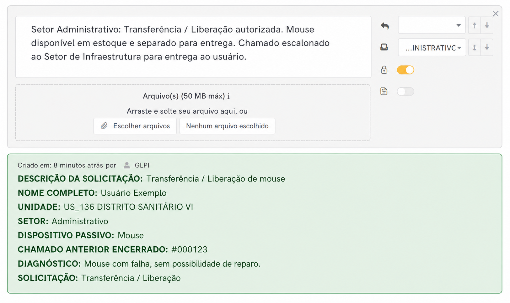
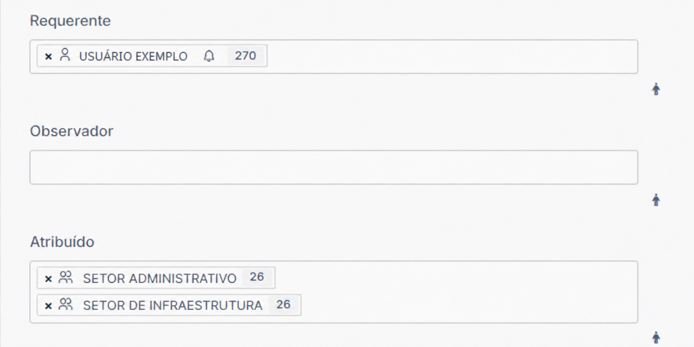

Identificação
| Tipo | Processo Operacional |
| Título | Manutenção, Transferência e Liberação de Ativos e Dispositivos passivos no GLPI |
| Áreas envolvidas | Setor de Infraestrutura e Setor Administrativo |
| Sistema | GLPI |
| Data de criação | Julho / 2026 |
| Versão | 1.0 |
Aplicação: este processo é utilizado quando a Infraestrutura classifica a demanda como manutenção corretiva e identifica a necessidade de liberar ou transferir um dispositivo passivo ou ativo físico, incluindo computador e notebook.
Objetivo e escopo
Padronizar o encerramento do chamado técnico e a abertura de um subchamado relacionado ao chamado anterior, assegurando a consulta ao estoque, o prosseguimento da Transferência / Liberação pelo Setor Administrativo e a entrega do dispositivo passivo ou ativo físico pelo Setor de Infraestrutura. Além dos dispositivos passivos, este fluxo também contempla ativos como computador e notebook.
Caixa de somDispositivo de áudio externo
Fonte externaFonte ou adaptador de alimentação
HeadphoneFone de ouvido com ou sem microfone
MouseDispositivo apontador
TecladoDispositivo de entrada
WebcamDispositivo externo de vídeo
Leitor de código de barrasDispositivo para leitura de códigos de barras
ComputadorAtivo físico cadastrado ou controlado no GLPI
NotebookAtivo físico portátil cadastrado ou controlado no GLPI
Fluxo resumido
1. InfraestruturaDiagnostica, registra a manutenção corretiva e encerra o chamado original.
→
2. SubchamadoSomente após o encerramento, abre o novo registro relacionado, com categoria e grupo corretos.
→
3. AdministrativoConsulta o estoque e realiza a Transferência / Liberação.
→
4. InfraestruturaRecebe o chamado e realiza a entrega ao usuário.
Processo 1 Abertura, diagnóstico e encerramento
PROCESSO 1Abertura e tratamento do incidente de manutenção corretivaInfraestrutura▼
| Nº | Ação / Descrição | Responsável | Observação |
|---|---|---|---|
| 1 | Receber a demanda e confirmar que o incidente envolve um dispositivo passivo ou ativo físico: caixa de som, fonte externa, headphone, mouse, teclado, webcam, leitor de código de barras, computador ou notebook. | Infraestrutura | Identificar usuário, unidade, setor e dispositivo. |
| 2 | Acessar o GLPI pelo caminho Assistência → Criar chamado. | Infraestrutura | Iniciar um novo chamado para registrar o incidente. |
| 3 | Preencher Entidade, selecionar o tipo Incidente e informar a origem da requisição e a localização. | Infraestrutura | Conferir os dados antes de continuar. |
| 4 | No campo Categoria, selecionar o caminho correspondente ao dispositivo ou ativo. Exemplos: Dispositivos Passivos > Mouse > Manutenção Corretiva ou Ativos > Computador > Manutenção Corretiva. | Infraestrutura | Substituir “Mouse” ou “Computador” pelo item efetivamente atendido. |
| 5 | Preencher requerente, descrição detalhada do defeito e grupo atribuído Setor de Infraestrutura; depois, salvar o chamado. | Infraestrutura | Registrar todas as informações necessárias ao diagnóstico. |
| 6 | Realizar o diagnóstico técnico e registrar testes, falha identificada e conclusão no acompanhamento. | Infraestrutura | Manter o histórico técnico completo. |
| 7 | Quando for necessária a substituição, registrar no campo Solução o diagnóstico, o dispositivo atendido, as ações realizadas e a necessidade de continuidade por meio de Transferência / Liberação. | Infraestrutura | A solução deve explicar claramente por que o incidente técnico está sendo concluído. |
| 8 | Encerrar o chamado original, alterando seu status para Fechado, e confirmar que o encerramento foi registrado no GLPI. | Infraestrutura | Guardar o número do chamado encerrado. Somente após esta etapa deve ser aberto o chamado relacionado. |
Sequência obrigatória: primeiro registre a solução e encerre o chamado original. O chamado relacionado de Transferência / Liberação só pode ser aberto depois que o chamado original estiver com status Fechado.

Processo 2 Abertura e relacionamento do novo chamado
Pré-requisito obrigatório: confirme que o chamado original está com status Fechado. Primeiro abra e salve o novo chamado de Transferência / Liberação; somente depois relacione-o ao número do chamado anterior encerrado.
PROCESSO 2Abrir o novo chamado e depois relacioná-lo ao chamado anteriorInfraestrutura▼
| Nº | Ação / Descrição | Responsável | Observação |
|---|---|---|---|
| 1 | Após confirmar o encerramento do incidente original, acessar Assistência → Criar chamado para abrir o novo chamado. | Infraestrutura | O chamado anterior deve estar com status Fechado. |
| 2 | Preencher os campos de entidade, tipo, origem, localização, requerente e descrição com base nas informações do chamado anterior. | Infraestrutura | Citar na descrição o número do incidente original e o diagnóstico técnico. |
| 3 | No campo Categoria, selecionar o caminho do dispositivo ou ativo e da solicitação. Exemplos: Dispositivos Passivos > Mouse > Transferência / Liberação ou Ativos > Computador > Transferência / Liberação. | Infraestrutura | Substituir “Mouse” ou “Computador” pelo item solicitado. |
| 4 | No campo Grupo atribuído, selecionar obrigatoriamente Setor Administrativo. | Infraestrutura | Conferir o grupo antes de salvar. |
| 5 | Salvar o novo chamado e anotar o número gerado pelo GLPI. | Infraestrutura | O relacionamento só será realizado depois que o novo chamado estiver criado. |
| 6 | No novo chamado, abrir a seção Chamado relacionado, selecionar Relacionado a e, na lista suspensa “-----”, digitar o número do chamado anterior encerrado. | Infraestrutura | Informar o número do chamado original, que deve estar com status Fechado. |
| 7 | Salvar e conferir se o relacionamento entre o novo chamado e o chamado anterior foi registrado corretamente. | Infraestrutura | Não encaminhar ao Administrativo sem validar o vínculo. |


Observação: a tela de categorização de Transferência / Liberação vem primeiro. Somente depois de salvar o novo chamado, acesse Chamado relacionado e, na lista suspensa “-----”, digite o número do chamado anterior já encerrado.
Processo 3 Estoque, Transferência / Liberação e retorno
PROCESSO 3Resposta do Administrativo e escalonamento de volta à InfraestruturaAdministrativo▼
| Nº | Ação / Descrição | Responsável | Observação |
|---|---|---|---|
| 1 | Receber o chamado atribuído ao Setor Administrativo e conferir o relacionamento com o chamado técnico anterior encerrado. | Administrativo | Validar usuário, unidade, dispositivo passivo ou ativo físico e diagnóstico. |
| 2 | Consultar o estoque, identificar o dispositivo passivo ou ativo físico disponível e separar fisicamente o item solicitado. | Administrativo | Registrar o resultado da consulta no acompanhamento. |
| 3 | Registrar uma resposta no chamado informando: “Transferência / Liberação autorizada. Dispositivo disponível em estoque e separado para entrega.” | Administrativo | A resposta deve identificar o dispositivo ou ativo liberado. |
| 4 | Dar prosseguimento à Transferência / Liberação e entregar internamente, em mãos, o dispositivo ao Setor de Infraestrutura. | Administrativo | Manter no chamado a rastreabilidade do item entregue. |
| 5 | No campo Grupo atribuído, manter o Setor Administrativo e acrescentar o Setor de Infraestrutura por último. | Administrativo | Não remover o Administrativo. Ao final, os dois grupos devem permanecer visíveis: Administrativo primeiro e Infraestrutura por último. |
| 6 | Salvar a alteração para escalonar o chamado de volta à Infraestrutura, que realizará a entrega ao usuário. | Administrativo | O chamado permanece aberto até a confirmação da entrega final. |


Grupos atribuídos: ao final da atuação administrativa, devem constar simultaneamente Setor Administrativo e Setor de Infraestrutura, nesta ordem. A Infraestrutura é adicionada por último para receber o chamado de volta e efetuar a entrega.
Sem estoque: registrar a indisponibilidade no chamado, manter o usuário informado e seguir a orientação administrativa vigente. O chamado deverá permanecer aberto até que haja uma solução e a entrega do dispositivo seja concluída. Não encerrar o chamado nem encaminhá-lo para entrega sem um item efetivamente disponibilizado.
Processo 4 Entrega e conclusão
PROCESSO 4Entrega do dispositivo ao usuárioInfraestrutura▼
| Nº | Ação / Descrição | Responsável | Observação |
|---|---|---|---|
| 1 | Receber do Setor Administrativo, em mãos, o dispositivo passivo ou ativo físico liberado e conferir o item. | Infraestrutura | Confirmar que corresponde ao registrado no chamado. |
| 2 | Agendar ou realizar a entrega do dispositivo passivo ou ativo físico ao usuário ou à unidade solicitante. | Infraestrutura | Quando aplicável, testar o funcionamento no local. |
| 3 | Registrar no acompanhamento a data, o item entregue, o destinatário e a confirmação de recebimento. | Infraestrutura | Este registro comprova a conclusão do atendimento. |
| 4 | Inserir a solução e encerrar o subchamado. | Infraestrutura | O histórico deve demonstrar diagnóstico, Transferência / Liberação e entrega. |
Resultado esperado: dispositivo ou ativo liberado pelo Administrativo, entregue pela Infraestrutura e processo integralmente rastreável por meio do relacionamento entre os chamados.
Regras obrigatórias
- O chamado técnico original de manutenção corretiva deve ser encerrado antes da continuidade administrativa.
- O novo registro deve ser criado como subchamado relacionado ao número do chamado anterior.
- A categorização deve identificar expressamente o dispositivo passivo ou ativo físico: caixa de som, fonte externa, headphone, mouse, teclado, webcam, leitor de código de barras, computador ou notebook.
- A solicitação deve ser Transferência / Liberação e o primeiro grupo atribuído deve ser o Setor Administrativo.
- O Administrativo consulta o estoque, realiza a Transferência / Liberação, entrega internamente o dispositivo ou ativo em mãos à Infraestrutura e, no GLPI, mantém o grupo Administrativo enquanto acrescenta Infraestrutura por último.
- Quando não houver estoque, o chamado deve permanecer aberto até a solução, sem encerramento, enquanto o usuário é mantido informado.
- A Infraestrutura realiza a entrega final do dispositivo ou ativo, registra a evidência e encerra o subchamado.
Histórico de Revisões
| Versão | Data | Responsável | Descrição |
|---|---|---|---|
| 1.0 | Julho / 2026 | GTIC / Saúde Digital Atende | Criação do processo |